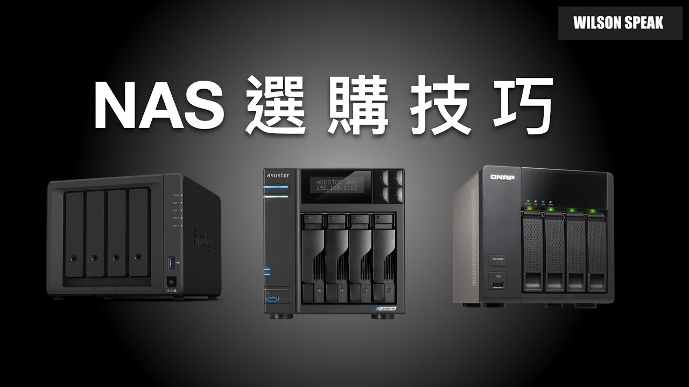

第一次買 NAS，先問這六件事：不要只看幾 Bay 和容量

原片發布 2022-04-10 · 點封面看原片。
第一次買 NAS，很容易先比硬碟槽數和最大容量。但真正用起來，會碰到照片怎麼匯入、家人怎麼找檔案、備份放哪裡，以及出問題誰來處理。先把這些事情列出來，再看規格會比較有方向。
Wilson 在 2022 年的影片分享 NAS 選購面向。這篇保留六個值得問的問題，延伸成下單前的清單；舊片中的價格和機型定位，不直接當成現在的推薦。
先想你真的會用哪些功能
先把「我要備份」說得更具體：要保護誰的手機照片、哪些電腦資料、會不會多人同時用？照片自動上傳、縮圖整理和大量搜尋，也會帶來不同負載，不能只用檔案種類判斷效能需求。
如果打算遠端看影片，還要分清楚直接播放與轉碼；若要從 NAS 剪片，則連同檔案格式、軟體和網路流程一起測。能列出一條實際工作路徑，比勾選一長串可能永遠用不到的功能更有幫助。
- 寫下每天會用、偶爾會用與目前不需要的功能。
- 列出同時使用的人與裝置，以及必要的 App。
- 確認資料從哪裡來、在哪裡工作、最後備份到哪裡。
CPU 和記憶體，要對照需要的套件
不要直接把處理器品牌或架構當成好壞排名。先查該型號支援的套件、系統版本和功能需求，尤其第三方服務、虛擬機或容器，可能各有架構與資源限制。
影片轉碼還牽涉來源格式、編碼、硬體加速與應用程式支援，不是看到 x86 就一定快，或看到 ARM 就一定不能做。記憶體能否擴充、允許的規格與容量，也要查該機型文件，不能假設日後都能加。
資料規劃示意。RAID、同步與同機快照，都不能直接當作獨立備份。
幾 Bay 和可用容量，不能只做加法
Bay 是實體硬碟槽數，可用容量還要看硬碟組合、儲存配置、系統保留空間與快照等用途。容錯配置可能占用部分容量，不能把盒子裡所有硬碟標示直接相加，就當成最後能放的檔案量。
先估現在資料量、成長速度與保留版本，再用官方容量工具和規格核對。多一個槽也不代表未來能任意擴充，是否支援擴充櫃、能否更換硬碟升級，都有條件。單槽或多槽的取捨要連同容錯和備份策略看，不用一句話判定所有人都要幾槽。
網路孔快，電腦和交換器也要跟上
NAS 網路孔較快，仍要電腦網卡、交換器、線路和實際協商都配合，整條路才有機會受益。若用 Wi-Fi 工作，還要把無線接入這一段納入，不要只看 NAS 的孔位規格。
多個網路孔做鏈路聚合，也不代表一個檔案傳輸就會把速度直接相加。實際分流要看協定、交換器與連線方式。先估你需要的傳輸工作，再把沿途升級成本一起列出來，別只買到其中一端。
買 NAS 的預算，也要留給備份
總預算要把機身、硬碟、備份目的地，以及必要的電源保護與網路設備一起算。重要資料放進 NAS 後，還需要別的可用副本；把所有預算都花在主機，反而可能留下真正的缺口。
RAID 的容錯不能處理所有誤刪、勒索、失竊或火災。同步可能連錯誤一起同步，同機快照也不是獨立副本。依重要性安排保留版本與不同位置的備份，並試著還原檔案，確認帳號、金鑰和流程真的可用。
- 把重要資料與可重新下載的資料分開列。
- 確認備份目的地、版本保留和存取權限。
- 實際還原一份檔案，確認能開啟且內容正確。
把維護和搬資料的成本一起算
NAS 需要更新、查看儲存健康狀態、處理容量警示和驗證備份。放在家裡，也要考慮散熱、噪音與用電，並確認誰會收到通知、誰負責處理。沒有維護安排，功能再多也可能用不安心。
未來換機或跨品牌時，硬碟能否直接搬過去不能想當然。資料移轉、權限、套件設定都可能需要重做。買之前先讀支援與移轉文件，留出備份和搬資料的空間，才不會容量滿了才發現無處可搬。
你可能還想問
有 RAID 和快照，還要另外備份嗎？
要依資料重要性安排獨立副本。RAID 處理特定故障容錯，快照可協助回復部分變更，但同機資料仍可能一起受損。備份也要實際測還原。
沒有 M.2 插槽，代表以後沒辦法改善效能嗎？
不代表。先找瓶頸，有時是網路、記憶體、套件或工作流程。SSD 快取也不是每個工作都受益，M.2 支援用途還要看機型與系統。
只存照片，就能直接買最入門的機型嗎？
先確認照片量、使用人數、索引或辨識功能、App 支援與備份流程。不要只憑照片兩字或處理器架構推斷需求，能試用實際流程會更清楚。
影片與參考資料
原片發布 2022-04-10。文章整理 2026-11-14，依影片公開字幕、說明延伸，並以官方資料校訂。實際設定請對照你的型號與版本。